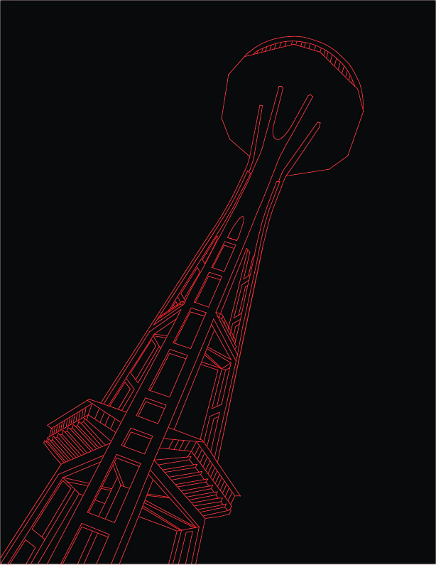
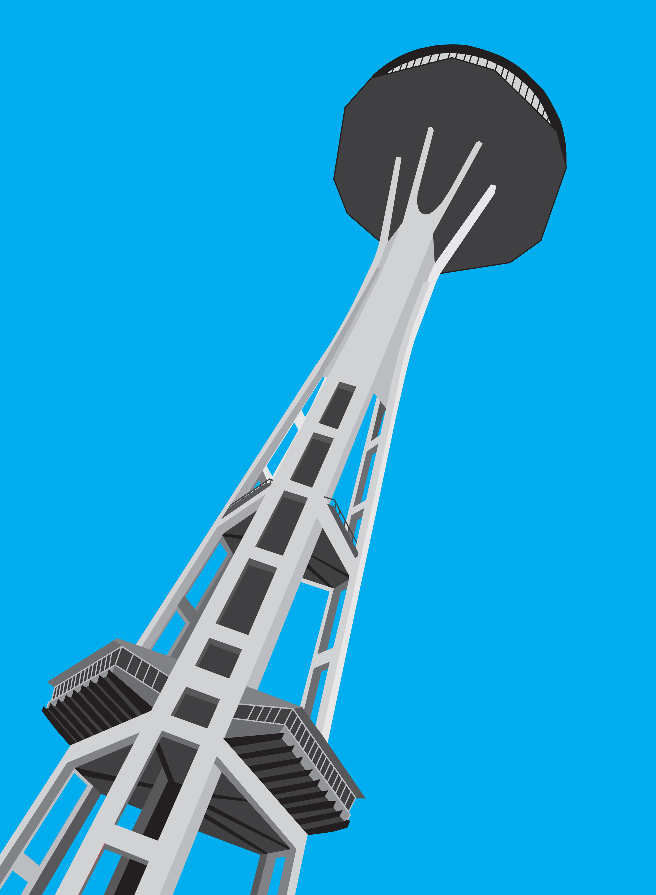
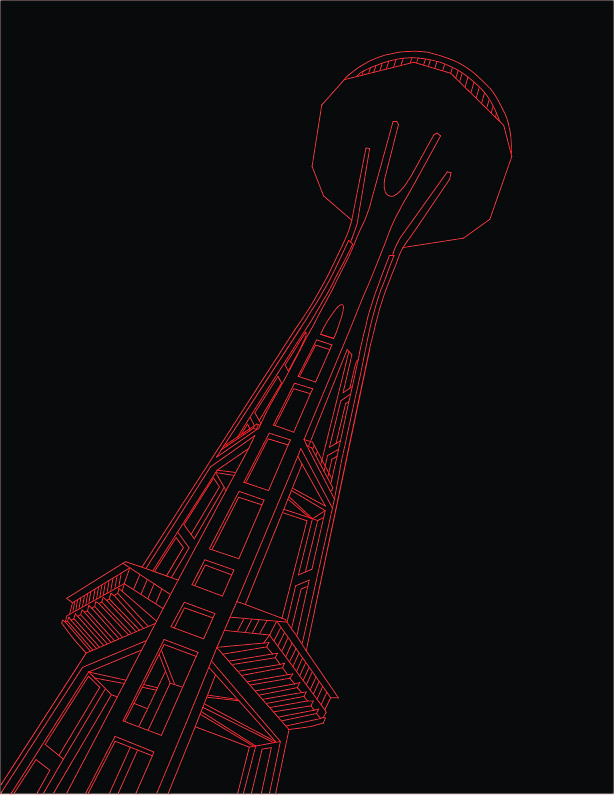
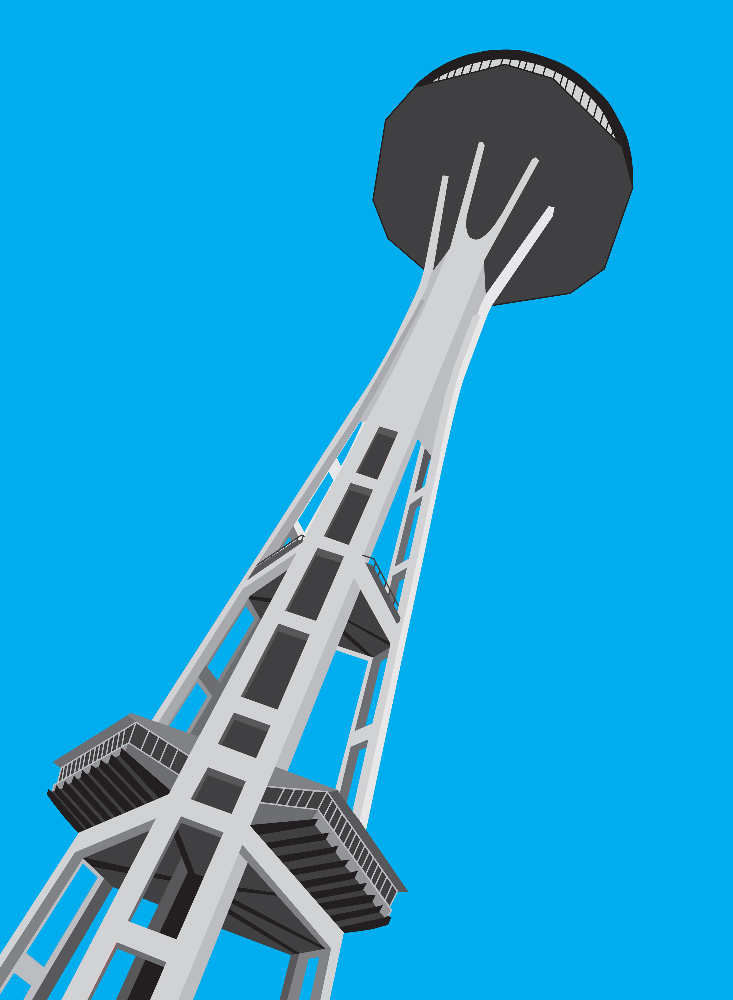

ARCHITECTURE
 



Project
Create a digital drawing of a building with unique or cool architecture.
Programs
Adobe Photoshop and Adobe Illustrator
Process
Gather images of buildings from a place you have visited or somewhere you would like to go. Choose one building with unique or cool architecture.
Produce a clean rendering of the chosen building. Use Photoshop to clean up the original image and use Illustrator to create a digital drawing. Create the drawing by tracing the lines of building so that if the image was removed, the redrawn lines will evoke the object’s likeness. The background of the building becomes transparent then juxtaposed onto another background lansdscape.